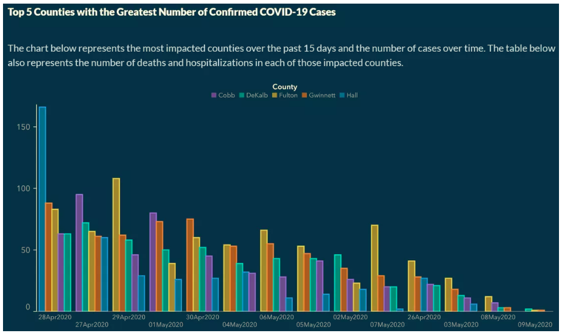

Misleading data visualizations
Data science ethics
Data Science with R
Getting Started
Programming exercises are designed to provide an opportunity for you to put what you learn in the videos and readings. These exercises feature interactive code cells which allow you to write, edit, and run R code without leaving your browser.
When the ▶️ Run Code button turns to a solid color (with no flashing bubble indicating that the document is still loading), you can interact with the code cells!
We invite you to think critically about the ethics questions associated with each graph before opening the solution box so you get the most out of this exercise.
Packages
We’ll use the tidyverse and scales packages to create and improve plots in this programming exercise. These are already installed for you to use in this programming exercise, run the following code cell to load these packages.
Motivation
Data visualization is a powerful tool used to help a general audience synthesize complex data into a message that is understandable. However, data visualizations that are intentionally or unintentionally misleading can lead an audience to conclusions that are nothing more than fabrications of the truth.
In this programming exercise, we are going to visit data from the COVID-19 pandemic, and work through two different data visualizations, identifying why they are misleading, and how they can be improved.
COVID-19 in Kansas
“On August 6, 2020, Rachel Maddow of MSNBC tweeted “Chart: Kansas mask counties versus no-mask mandate counties” (Maddow 2020, August 6) along with a link to a plot (see figure below) created by the Kansas Department of Health and Environment—which was also shared live on The Rachel Maddow Show that same day. The plot compared the number of COVID-19 cases over time for counties in Kansas that had mask mandates versus those that did not” (Engledowl and Weiland 2021)

What is misleading about this graph? Why might it be misleading?
Suggested answer
There are two different y-axes. One on the left for the counties with the mask mandate, and one on the right for the counties without a mask mandate. This may be misleading, as someone may not see the additional y-axis on the right side of the graph; line graphs typically do not have two different y-axes.
What trend in these data might someone conclude because of the misleading visualization?
Suggested answer
Based on the misleading visualization, one could come to the conclusion that, the Kansas COVID-19 7 day rolling averages per/100k between the dates of 7/12/2020 through 8/03/2020 decreased to a lower value for masked counties than for counties that did not have the mask mandate
Improving the visualization
Now that we have identified how this visualization is misleading, let’s create our own visualization that addresses the issue!
The data used to create the data visualization can be read in (to be used later) viewed by running the following code.
First, we need to think about the structure of our data. As seen above, the three variables in the data are date, mask mandate, and no-mask mandate.
How do the structure of these data need to change in order for us to plot these data?
Solution
The values of mask mandate and no-mask mandate need to be levels of a categorical variable that we can map to a visual element (lines) on our plot.
Now let’s do this!
Reshape the data so that it’s longer with three columns: date, mandate, and cases. Save the resulting data frame as kansas_covid_longer.
Hint 1
Consider using the pivot_longer() function:
kansas_covid_longer <- kansas_covid |>
pivot_longer(
cols = ___,
names_to = ___,
values_to = ___
)
Hint 2
We want to pivot all columns but the date column:
kansas_covid_longer <- kansas_covid |>
pivot_longer(
cols = !date,
names_to = ___,
values_to = ___
)
Hint 3
The columns names should go to a column called mandate:
kansas_covid_longer <- kansas_covid |>
pivot_longer(
cols = !date,
names_to = "mandate",
values_to = ___
)
Solution
The values should go to a column called cases:
kansas_covid_longer <- kansas_covid |>
pivot_longer(
cols = !date,
names_to = "mandate",
values_to = "cases"
)
kansas_covid_longerNow that our data is in the correct shape, let’s also address the data type of the date variable.
Transform the date column of the kansas_covid_longer data frame to be a variable that R recognizes as a date. Save the resulting data frame with the updated date variable as kansas_covid_longer again.
Hint 1
You can use the mdy() function from the lubridate package which is already loaded with tidyverse.
Hint 2
You’re transforming a column, so use the mutete() function.
Hint 3
Putting the first two hints together:
kansas_covid_longer <- kansas_covid |>
___(date = ___(date))
Solution
kansas_covid_longer <- kansas_covid_longer |>
mutate(date = mdy(date))
kansas_covid_longerOur data frame is ready to be plotted! Next, we’ll use ggplot(), and the appropriate geom function to make our new graph.
Recreate a slightly improved version of the original plot with date on the x-axis, cases on the y-axis, and data represented in lines colored by mandate.
Hint 1
Please see the ggplot2 function reference for help with determining the appropriate geom for making a line plot.
Hint 2
The appropriate geom is geom_line():
ggplot(
kansas_covid_longer,
aes(x = ___ , y = ___ , color = ___, group = ___)
) +
geom_line()
Solution
Putting everything together together:
ggplot(
kansas_covid_longer,
aes(x = date , y = cases , color = mandate, group = mandate)
) +
geom_line()Using our new visualization, what proper conclusion can we make?
Discussion
Based on our new graph, we can see the Kansas COVID-19 7 day rolling averages per/100k between the dates of July 12, 2020 through August 3, 2020 decreased for the mask mandated counties, and stayed relatively consistent for the non-masked mandated counties. We can also see that within this date range, the non-mask mandated counties had a lower rolling average per/100k than masked mandated counties.
Next, let’s improve the visualization further:
- Use
scale_color_manual()to change the colors of the lines associated with themandatevariable. - Use
scale_x_date()to change the breaks and labels of the x-axis. - Use
labs()to modify a axis labels and the label of the legend as well as add atitleand asubtitle. - Use
theme_bw()to make the plot black-and-white themed. - Move the legend inside of the plot, 90% of the way on the x-axis and 80% of the way on the y-axis, and draw a gray rectangle around it.
Run the code below to generate the plot with the improvements described above. Then, modify various pieces of the code and re-run it to observe the effect and to help you understand what each function does.
COVID-19 in Georgia
Georgia Department of Public Health (DPH) temporarily published the following graph on the COVID-19 Daily Status Report.

What is misleading about this graph? Why might it be misleading?
Discussion
The dates on the x-axis are not in chronological order. This is extremely misleading, and a general audience is going to assume a correct chronological order to the dates from left to right. Further, the order of the counties within date are sorted from highest to lowest, making cross date comparison more difficult for each county.
What trend in these data might someone conclude because of the misleading visualization?
Discussion
Based on the misleading visualization, one could come to the conclusion that the trend of COVID-19 cases across these five counties are significantly decreasing each day.
Improving the visualization
The data, gathered from the New York Times, that are used to create the data visualization can be read in (to be used later) viewed by running the following code.
Use the georgia_covid data frame above to recreate the visualization with the correct order on the x-axis and same order of counties for each date. Note that you will need to first filter() the data for dates between 2020-04-26 and 2020-05-09.
Hint 2
Use the following aesthetic mappings:
x = datey = casegroup = countyfill = county
Hint 3
Use geom_col() to plot the data.
Hint 4
Put the previous hints altogether:
georgia_covid |>
filter(date >= "2020-04-26" & date <= "2020-05-09") |>
ggplot(aes(x = date, y = case, group = county, fill = county)) +
geom_col()
Solution
Finally, dodge the bars:
georgia_covid |>
filter(date >= "2020-04-26" & date <= "2020-05-09") |>
ggplot(aes(x = date, y = case, group = county, fill = county)) +
geom_col(position = position_dodge())Next, let’s improve the visualization further:
- Make the bars skinnier by adding a
widthargument with a value less than 1 togeom_col(). - Use
scale_x_date()to change the breaks and labels of the x-axis. - Use
scale_fill_manual()to match the colors in the original plot. - Use
labs()to modify a axis labels and the label of the legend as well as add atitleand asubtitle. - Use
theme_classic()to remove the gridlines. - Modify a bunch of
theme()elements to match the colors and other features of the original plot.
Run the code below to generate the plot with the improvements described above. Then, modify various pieces of the code and re-run it to observe the effect and to help you understand what each function does.
Using our new graph, what proper conclusion can we make about the trend of casses across the five counties?
Discussion
Based on the less misleading graph, we can see that the overall trend of cases across the five counties may have gone down, but the rate in which they went down depends on the county. Further, some counties (ex. Hall) show a more cyclic pattern than an overall downward trend.
What are some of your overall takeaways after working with these two misleading graphs?
Takeaways
We digest information from graphs very quickly. If data are misrepresented, it may not be initially obvious, leading to some making incorrect conclusions.
Data cane be manipulated based on their axes. If you are creating / consuming graphed information, it’s important to be cognizant of the scale and order in which information on the axes are in.
Plotting data in a unfamiliar way (ex. having two y-axes) can be misleading, instead of a helpful comparison tool. As a researcher, think critically about how your audience is going scan your visualization.
References
Engledowl, Christopher, and Travis Weiland. 2021. “Data (Mis)representation and COVID-19: Leveraging Misleading Data Visualizations for Developing Statistical Literacy Across Grades 6–16.” Journal of Statistics and Data Science Education 29 (2): 160–64. https://doi.org/10.1080/26939169.2021.1915215.